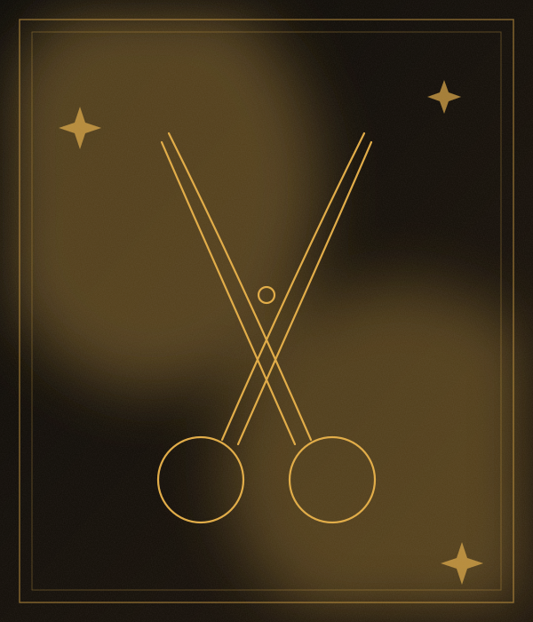
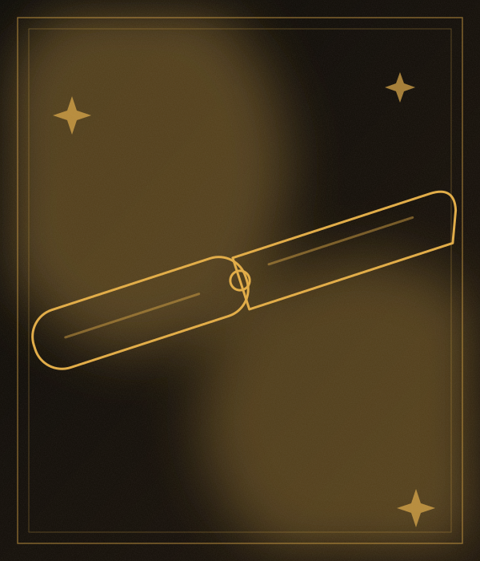
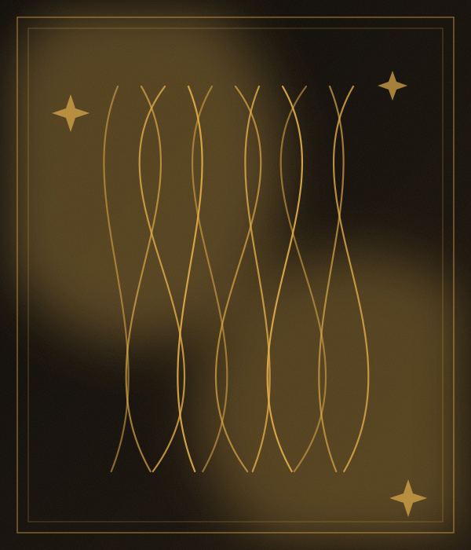
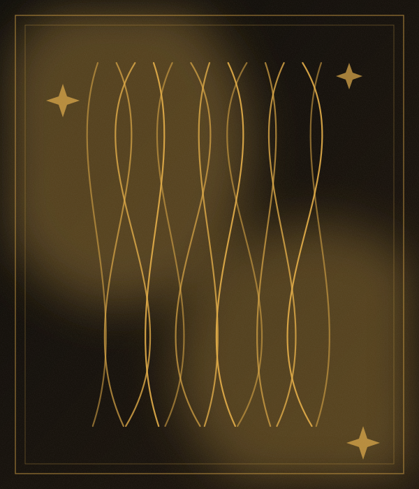
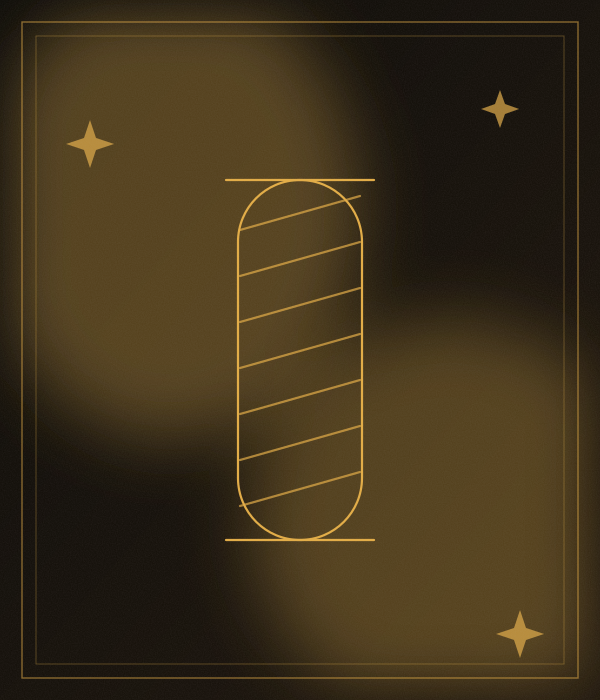
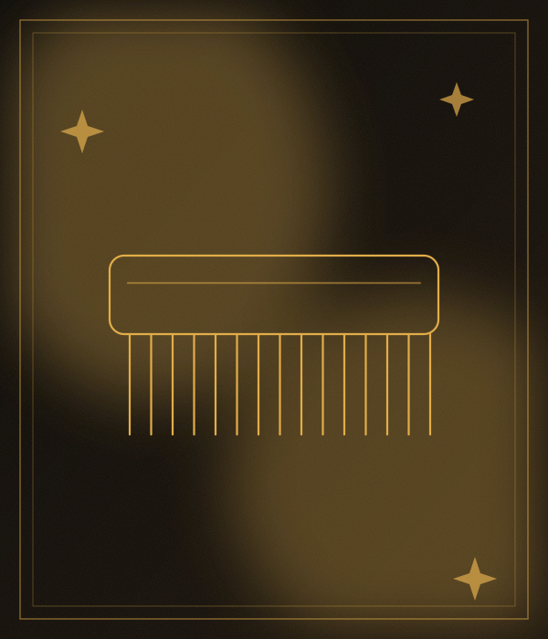

Cortes precisos, a tu estilo.
Barone Barbería Premium es una barbería en Magdalena del Mar, con 4.9 de puntaje y 133 reseñas en Google. Ofrece corte de cabello, camuflaje de canas, ocultar entradas, ondulaciones y looks y asesoría. Reserva tu cita y ven a conocernos.
Calificación basada en 133 reseñas de clientes en Google Maps.
Llámanos y agenda tu cita.
Av. del Ejército 1180. Fácil de encontrar.

Cortes precisos, a tu estilo.


Detalles y diseños hechos con precisión.


Detalles y diseños hechos con precisión.


Ondas definidas y con movimiento.


Asesoría para encontrar tu estilo.


Cortes precisos, a tu estilo.
Ilustraciones referenciales.
Comunícate por teléfono.
Dinos el servicio que quieres y cuándo te viene mejor.
Te esperamos en Av. del Ejército 1180, Magdalena del Mar.
133 reseñas en Google Maps